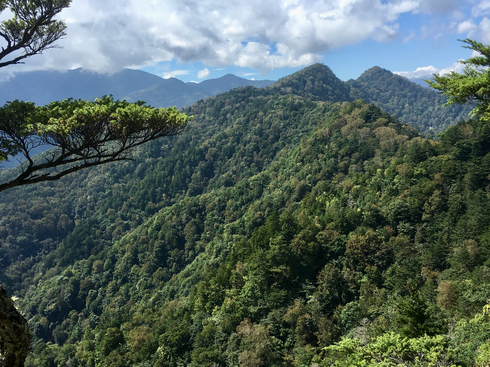
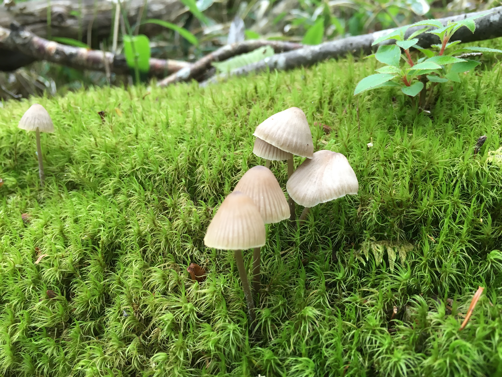

Beneath the ground we walk on every day lies an invisible world teeming with tiny living organisms – the soil microbiome. In recent years, the proliferation of advanced '-omics' analysis has allowed us to uncover deeper insights into the lives and roles of these microbial communities. Using a multifaceted approach that combines molecular experiments, field observations, manipulation studies, and statistical modeling, I'm exploring questions about how these microscopic life forms are distributed and how they interact with the forest ecosystem.